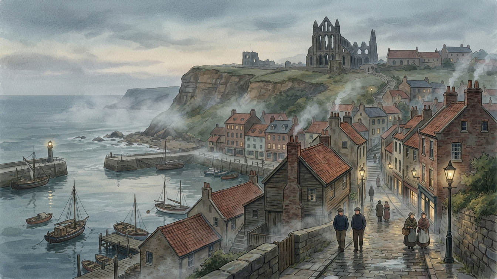

CAPÍTULO I
A carta que ficou
O sobrenome Whitmore permanecerá ligado à sua família.
Uma narrativa interativa · Inglaterra, 1895
Toda escolha deixa uma marca. Nem toda marca será percebida a tempo.

DUAS VIDAS · UM MUNDO · INÚMEROS DESTINOS
Whitby, Yorkshire. Outubro de 1895. O desaparecimento de Edward Whitmore deixou uma família à beira da miséria e uma pergunta sem resposta. Escolha o protagonista. As oportunidades, os obstáculos e algumas relações serão diferentes em cada campanha.
Personagens e acontecimentos centrais são fictícios, em um cenário inspirado na sociedade britânica do fim do século XIX.
PROTAGONISTA
—
DATA
—
IDADE
12 anos
DINHEIRO
£ 3
Reputação: Neutra
Relações: Margaret: cautelosa
CAPÍTULO I
O sobrenome Whitmore permanecerá ligado à sua família.
Suas decisões importantes aparecerão aqui.